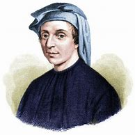

Welcome to the Mathematical World!
Fibonacci (c. 1170 – c. 1240)
Introducer of Hindu–Arabic Numerals to Europe
Fibonacci introduced Hindu-Arabic numerals to Europe through his famous book Liber Abaci (1202), revolutionizing calculation and commerce. His famous Fibonacci sequence illustrated growth patterns in nature and aesthetics, becoming a bridge between mathematics and biology. His practical arithmetic helped merchants, while his sequence inspired centuries of mathematical exploration. Beyond commerce, Fibonacci’s work subtly shaped mathematical reasoning by encouraging the use of recursion, patterns, and sequences as analytical tools.
The Fibonacci numbers appear in the arrangement of leaves, the branching of trees, and even in the spirals of galaxies, showing how mathematical ideas can reveal underlying structures of the natural world. While he may not have foreseen all the applications, his legacy persists in computer algorithms, financial modeling, and theoretical biology. His bridging of cultures, bringing Arabic and European mathematical traditions together, set a precedent for cross-cultural knowledge transfer in science and technology, influencing scholars for generations.
The Fibonacci Sequence
The Fibonacci sequence is defined recursively:
\[ F_0 = 0, \quad F_1 = 1, \quad F_{n} = F_{n-1} + F_{n-2} \quad \text{for } n \geq 2 \]
Thus the sequence begins:
\[ 0, \; 1, \; 1, \; 2, \; 3, \; 5, \; 8, \; 13, \; 21, \; 34, \ldots \]
The ratio of successive terms approaches the Golden Ratio:
\[ \lim_{n \to \infty} \frac{F_{n+1}}{F_n} = \varphi = \frac{1 + \sqrt{5}}{2} \approx 1.618 \]
This connection to the Golden Ratio explains why the sequence appears so frequently in nature and aesthetics, from the arrangement of sunflower seeds to the proportions of classical architecture.
Applications and Legacy
- In commerce, Liber Abaci introduced efficient calculation methods using Hindu–Arabic numerals, replacing the cumbersome Roman numeral system.
- In nature, Fibonacci numbers model rabbit populations, phyllotaxis (leaf arrangements), pinecones, shells, and even the spiral arms of galaxies.
- In modern mathematics, they are used in number theory, algorithm design, and recursive problem-solving.
- In finance, Fibonacci retracements are applied in technical analysis of stock markets.
- In computer science, Fibonacci heaps and search algorithms rely on properties of the sequence.
Facts
- Born: Pisa, Italy (c. 1170).
- Education: Learned mathematics in North Africa, influenced by Arabic scholars.
- Liber Abaci explained fractions, square roots, and practical arithmetic for merchants.
- Fibonacci sequence originally modeled rabbit populations.
- Helped standardize trade arithmetic across Europe.
- Set the stage for blending Arabic mathematical advances with European scholarship.